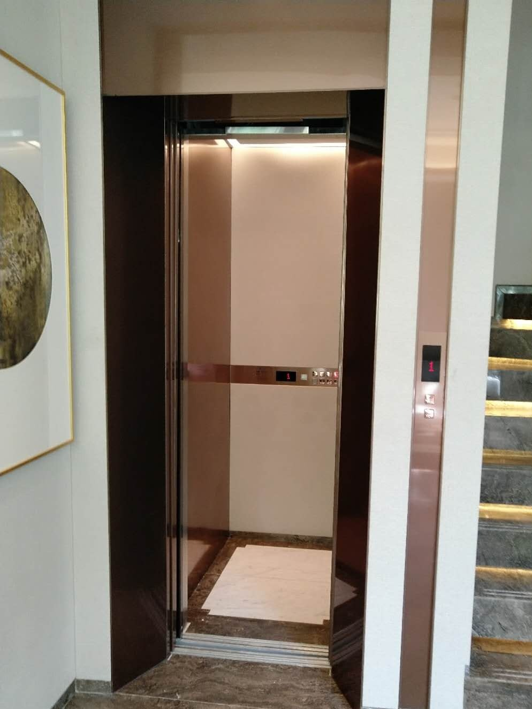
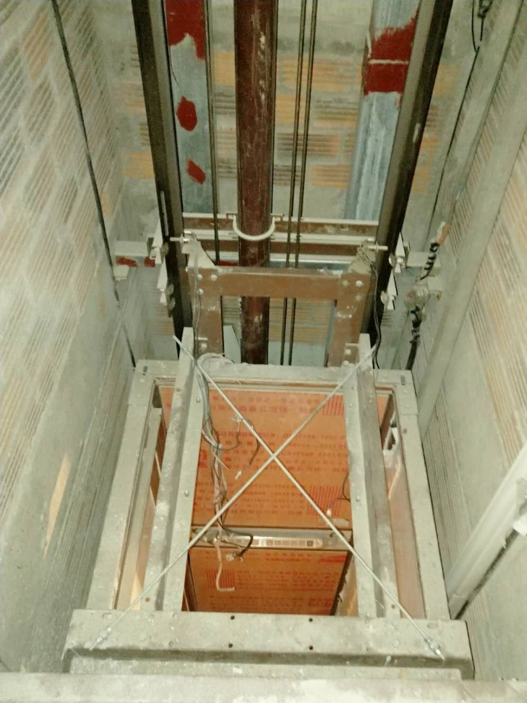
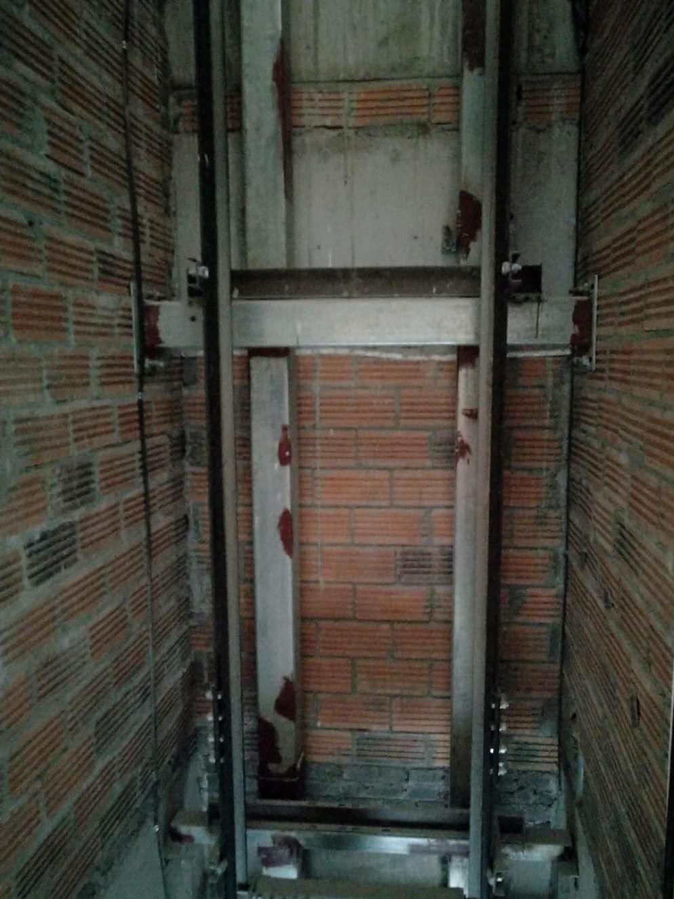
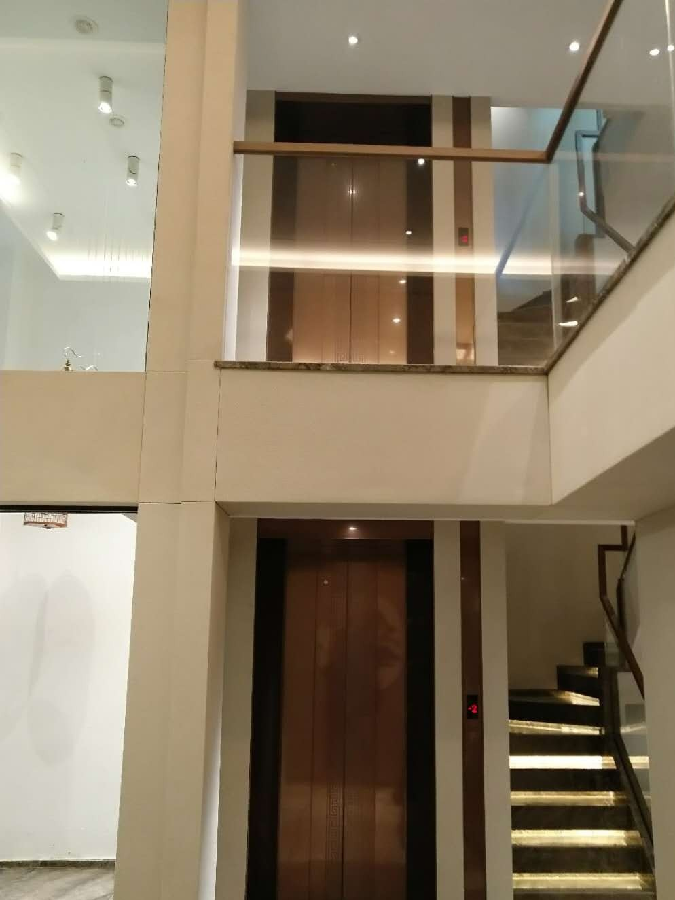
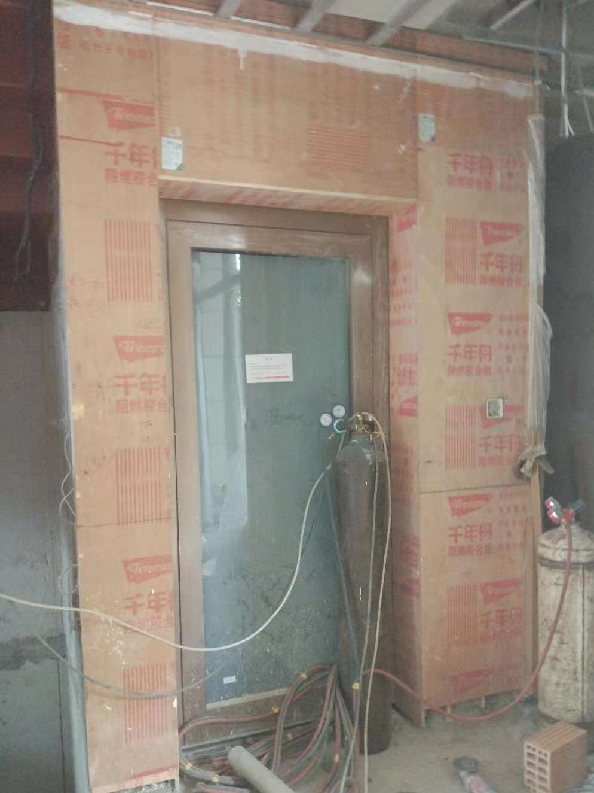
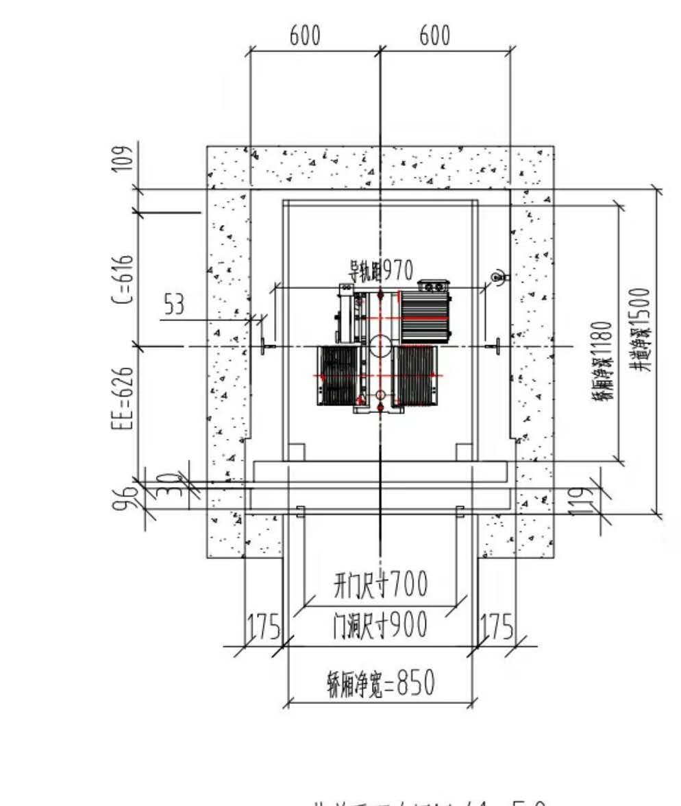
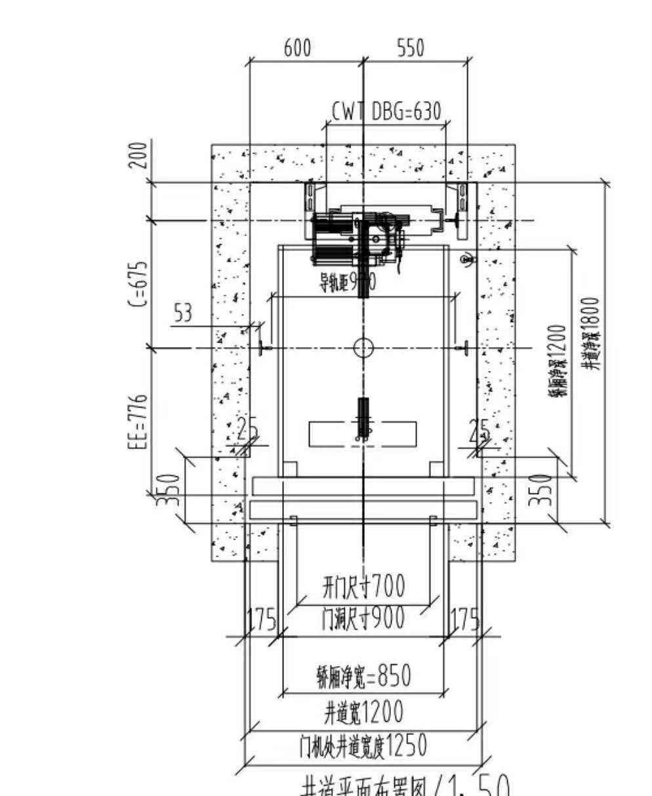

案例背景
合肥建发雍龙府这个样板间项目，最值得参考的地方不是“装了一台电梯”，而是它把一个很常见的问题讲清楚了：井道不大时，只要门型、开门方向和轿厢尺寸搭配得对，方案就能从“能做”变成“好用”。
原始图纸里，这个项目先后做过方案调整，早期是液压背包配手拉门，后来改成曳引龙门架配自动门。对业主来说，这类变化很有意义，因为很多人一开始只盯着价格，最后才发现真正决定体验的，是门怎么开、门洞多大、轿厢能不能站得舒服。
现场条件
| 项目 | 记录 |
|---|---|
| 项目类型 | 合肥建发雍龙府样板间电梯方案调整 |
| 井道宽度 | 约 1.2 米 |
| 井道深度 | 约 1.8 米和 1.5 米两种方案对比 |
| 开门与轿厢 | 开门尺寸约 700 毫米，门洞尺寸约 900 毫米，轿厢净宽约 850 毫米 |
小井道项目里，这三个数字必须一起看，不能只盯着其中一个。只看门洞大不大，往往会忽略轿厢内部是否够用。
方案为什么会调整
原方案偏向液压背包和手拉门，适合先把小空间思路跑通；后来的调整则转向曳引龙门架和自动门，说明现场更重视使用便利性和整体完成度。
- 手拉门更容易把方案做出来，但使用感受一般。
- 自动门对井道宽度、开门尺寸和安装精度要求更高。
- 井道越紧，门型选择就越会影响轿厢尺度和后期体验。
对业主的参考价值
如果你家也是别墅、样板间、自建房或者楼梯中间预留空间，最容易踩的坑就是先定样式，再倒推尺寸。这个案例反过来，它先把现场条件拆开，再决定怎么落地。
尤其适合这几类情况：井道宽度不大、希望提高使用便利性、想从手动门升级到自动门、需要在轿厢舒适度和井道尺寸之间做取舍。
俞工点评
小井道项目最怕的不是空间小，而是先拍脑袋定方案。只要把井道宽度、开门尺寸、轿厢净宽和门型关系理顺，很多看起来困难的项目，其实还有调整空间。
常见问题FAQ
井道宽度只有 1.2 米，还能做家用电梯吗？
可以先判断，不要先下结论。关键不是单看宽度，而是要一起看开门方式、轿厢净宽、门洞尺寸和结构条件。
为什么同样是小井道，后来会从手拉门改成自动门？
因为门型会直接影响使用便利性和整体体验。只要现场条件允许，自动门通常比手拉门更适合长期使用。
样板间案例能不能直接照搬到自己家？
不能直接照搬，只能参考思路。样板间的尺寸、结构和装修节奏都可能和实际住宅不同，还是要重新测量。
如果只想先判断能不能装，最该先看什么？
先看井道净尺寸、门洞尺寸、底坑、顶层高度和开门方向，再决定是不是适合继续推进。
项目图片记录





图纸与尺寸参考



如果你家也是自建房、别墅或楼梯中间空间想加装家用电梯，建议先把现场照片发给俞工，根据井道、底坑、顶层高度和开门方向做一次初步判断。电话：15056952050。

扫码发送现场照片，先初步判断能不能装。
建议拍井道、楼梯、底坑和顶层高度。